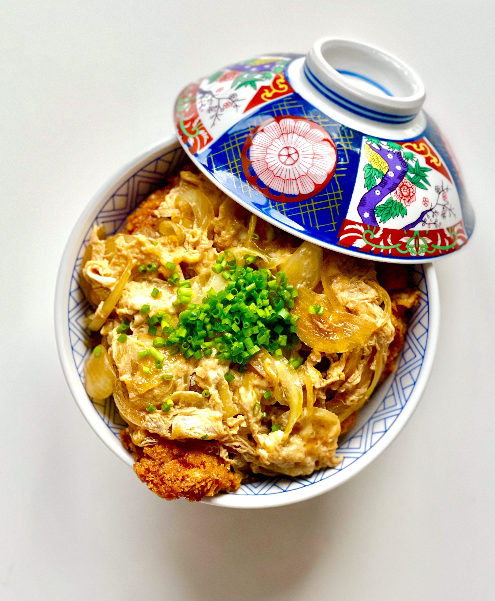

Katsudon かつ丼

Description
Katsudon is a type of donburi (丼), which translates
literally to bowl, and refers to both the actual bowl used to serve this
type of dish as well as the meal inside. Katsudon is a deep fried
pork cutlet, bathed in a savory onion-egg mixture before being placed on a
bed of rice. Katsudon is also commonly prepared with chicken,
which this recipe will feature. Fun fact: It is considered good luck to
eat a bowl of katsudon before an exam!
Ingredients
Chicken Katsu:
- 2 chicken breasts
- Sea salt
- Black pepper
- 1/4 cup all-purpose flour
- 1 egg, beaten
- 1 cup panko breadcrumbs
- 3 cups vegetable oil
Katsudon:
- 1 thinly-sliced onion
- 2 eggs, beaten
- 1.5 cups cooked rice
Seasoning blend:
- 1 1/2 Tbsp sake
- 1 1/2 Tbsp mirin
- 1 1/2 Tbsp soy sauce
- 1 1/2 tsp sugar
Steps
-
Season the chicken tender with salt and pepper. Coat the chicken with
flour, beaten egg (use 1 egg), and the panko in that order.
-
Heat 2-3 cups oil in a frying pan and shallow-fry the panko-coated
chicken at 350ºF (180ºC) until golden brown. Take out the chicken and
drain extra oil on a paper towel.
-
In another (or a clean) frying pan, add sliced onion and all the
ingredients for the katsudon seasonings. Cover and bring it to a boil
over medium heat. Once boiling, lower the heat to medium and cook the
onion, covered, until wilted.
-
Put chicken katsu over the onion and turn the heat up to medium-high
heat. Evenly distribute the beaten egg (use 2 eggs) over the chicken
katsu and onion. Cover to cook until the egg is set to your liking,
roughly 30 seconds.
- Turn off the heat. Transfer to a bowl of steamed rice. Enjoy!